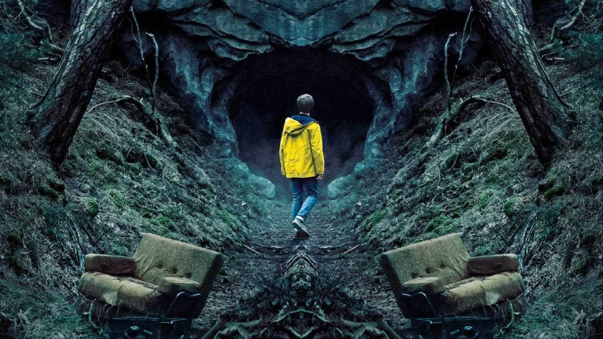

Lupin se inspira en el famoso personaje literario Arsène Lupin, un
ladrón de guante blanco y uno de los personajes más célebres de la
cultura francesa
La historia sigue a Assane Diop, una persona que ha crecido con
las historias de este célebre ladrón literario. Cuando éste
descubre que la muerte de su padre va más allá de lo que creía, se
involucra en una red de criminales que hará que se dedique a su
gran pasión: el robo.
Assane Diop creció junto a su padre en una gran mansión donde éste
trabajaba como chófer de una familia adinerada. Sin embargo, el
destino de su padre se vio oscurecido cuando es acusado
injustamente del robo de un preciado collar, el mismo que intenta
robar Assane Diop años después cuando ya es un adulto y tiene un
hijo
Anne with an "E"
Anne Shirley es una niña huérfana que vive en un pequeño pueblo
llamado Avonlea que pertenece a la Isla del Príncipe Eduardo, en
el año 1890. Después de una infancia difícil, donde fue pasando de
orfanato a hogares de acogida, es enviada por error a vivir con
una solterona y su hermano. Cuando cumple 13 años, Anne va a
conseguir transformar su vida y el pequeño pueblo donde vive
gracias a su fuerte personalidad, intelecto e imaginación.
¿Quién mató a Sara?
¿Quién mató a Sara? es una serie thriller y de acción que sigue la
historia de Alex Guzmán, el mismo que ha sido encarcelado en
prisión durante 18 años por haber supuestamente matado a su propia
hermana Sara.
Gracias a un plan perfecto, éste es liberado con una meta:
descubrir quién mató a su hermana Sara y por qué la familia
Lazcano le culpó a él. Lo que comienza con una simple
investigación, consigue desviarse en un camino mucho más peligroso
de lo que podría haberse llegado a imaginar
Suits
Harvey Specter es un éxitoso abogado de un bufete de Nueva York.
Harvey está harto de ver siempre a los mismos candidatos para la
empresa: niños ricos graduados en Harvard. Por accidente, aparece
entre los candidatos Mike Ross. Mike tiene memoria eidética y ha
pasado varias veces el examen de acceso a la Escuela de Derecho
sustituyendo a otros. Harvey le contrata y le ayuda a guardar el
secreto de que está ejerciendo sin la licenciatura. Mike se fija
enseguida en su compañera Rachel Zane. Mike y Ross trabajan juntos
y se complementan entre manipulación y buena ética profesional.
Dark

Harvey Specter es un éxitoso abogado de un bufete de Nueva York.
Harvey está harto de ver siempre a los mismos candidatos para la
empresa: niños ricos graduados en Harvard. Por accidente, aparece
entre los candidatos Mike Ross. Mike tiene memoria eidética y ha
pasado varias veces el examen de acceso a la Escuela de Derecho
sustituyendo a otros. Harvey le contrata y le ayuda a guardar el
secreto de que está ejerciendo sin la licenciatura. Mike se fija
enseguida en su compañera Rachel Zane. Mike y Ross trabajan juntos
y se complementan entre manipulación y buena ética profesional.
Arrow
Flecha Verde es un superhéroe vestido a lo Robin Hood que tiene un
arco muy especial. Sus flechas no son normales, sino que tienen
pegamento, redes, gas lacrimógeno e incluso kryptonita para luchar
contra sus enemigos. Su identidad secreta es la del
multimillonario Oliver Queen, un 'playboy' que desaparece en un
naufrafio en una peligrosa isla al sur del Mar de China y que, a
fuerza de sobrevivir, se convierte en un maestro arquero, de las
artes marciales y del camuflaje.